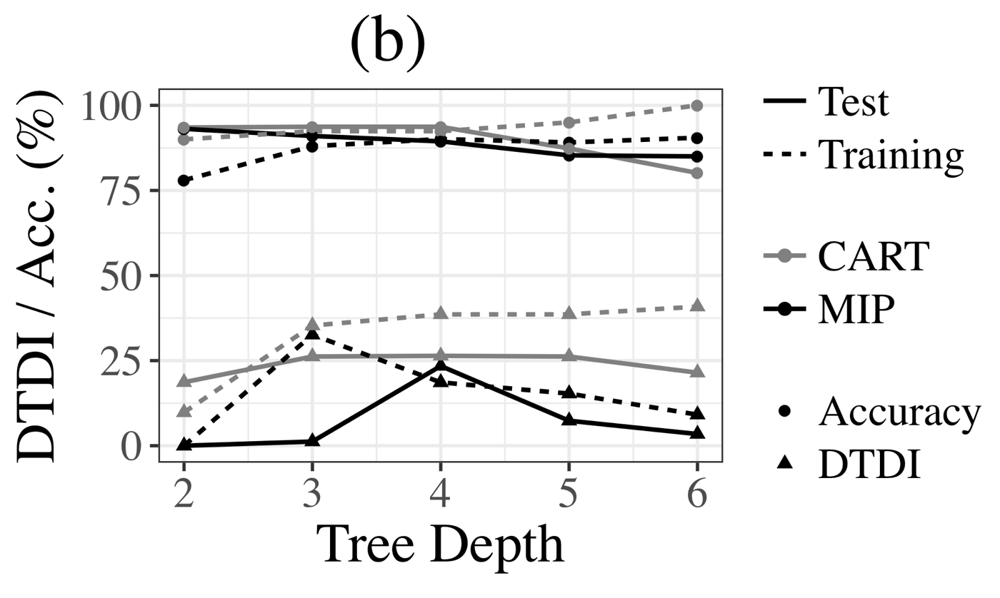
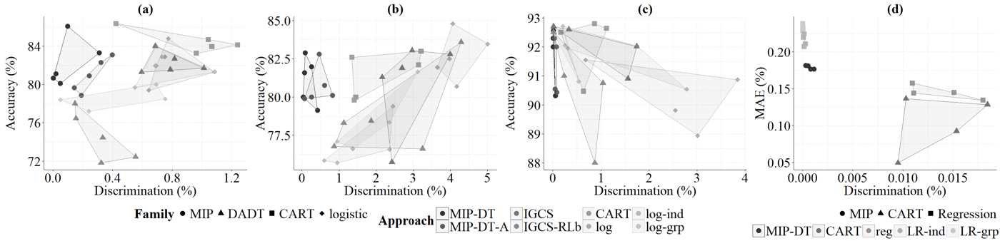
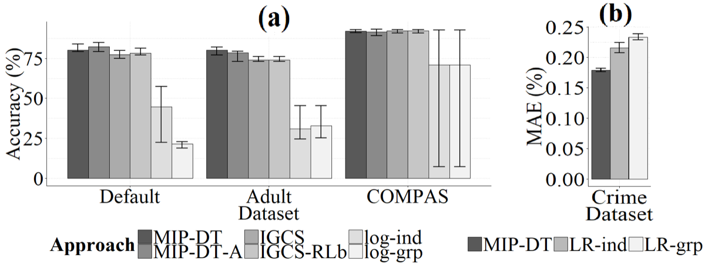
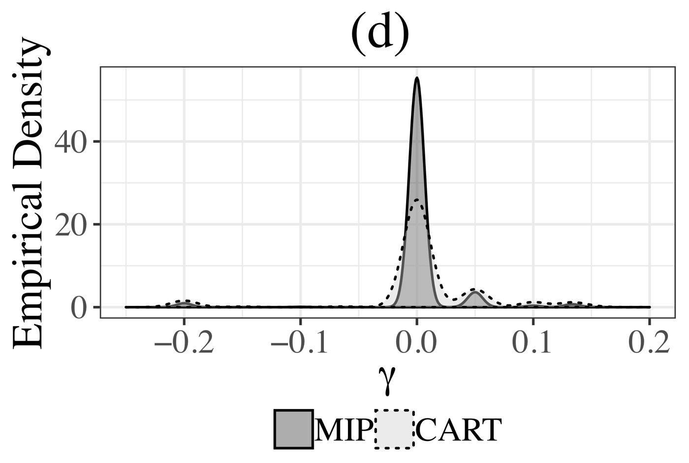
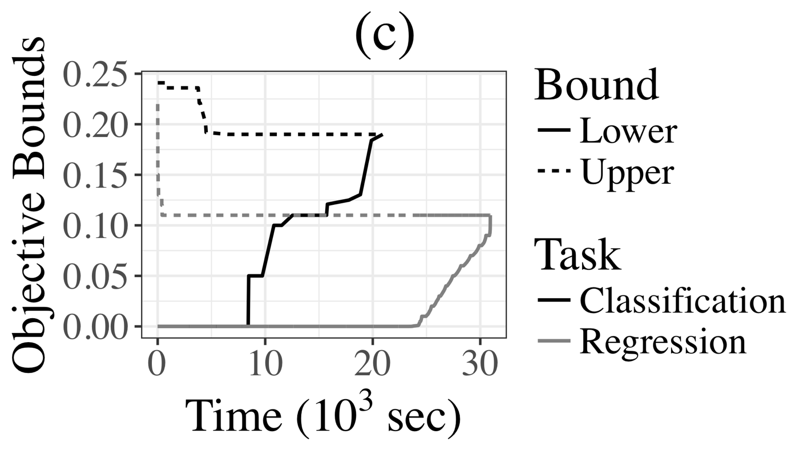

- 誤差 ＋ λ × 差別の指標誤分類率や平均絶対誤差に、処遇の不平等（DTDI）や結果の不平等（DIDI）の指標を λ 倍して足し、木の構造ごと MILP で最小にする。精度と公平性のバランスは λ 1 つで調整する。
- DTDI 0.32% 対 0.7%Adult の 1 つの分割での、提案法の木と λ = 0 の木（論文の呼び方では CART）の処遇の不平等の指標。保護属性だけが違う似た人が同じ扱いを受ける見込みは、提案法のほうが 2 倍高かった。
- 学習に約 5 時間分類の 3 つのデータでの平均の求解時間は 18,421 秒・15,945 秒・18,162 秒（上限は 5 時間）。公平なロジスティック回帰は 7.6〜18.4 秒だった。新しい人の予測はミリ秒単位で済む。
保護属性を学習から外すだけでは、機械学習による意思決定から差別はなくならない
教育、雇用、住宅、刑事司法のように社会的に影響の大きい意思決定にも、分類や回帰のモデルが使われるようになった。論文は差別を 2 種類に分ける。保護属性だけが違う似た人を違うように扱う処遇の不平等（disparate treatment、直接差別）と、保護属性を明示的には使わないのに、結果としてグループごとに扱いが系統的に違う結果の不平等（disparate impact、間接差別）である。
差別が生じる道筋も 2 つある。1 つは学習データ自体が偏っていて、本当の正解が観測できない場合である。もう 1 つはデータに偏りがなくても、モデルの誤りがグループによって違う場合で、乳がんの検出で黒人の偽陰性率が白人よりずっと高い分類器がその例である。保護属性をデータから消す素朴な方法では、ほかの特徴量が保護属性と相関していることがあるため、公平になるとは限らない。
論文が求める条件は 5 つある。精度が高いこと、公平であること、分類と回帰の両方に使えること、偏ったデータにも偏りのないデータにも使えること、そして意思決定者がモデルの構造を選んで解釈しやすさを調整できることである。公平な決定木にはすでに Kamiran ら（2010）のヒューリスティック（DADT）があったが、分類だけを対象にしていた。この論文は分類と回帰の両方に使える厳密な方法を提案する。
分類と回帰で同じ形の指標を定め、結果の不平等を DIDI、処遇の不平等を DTDI で測る
特徴量 \(\mathbf{x}\) を保護属性 \(\mathbf{x}_{\rm p}\) とそれ以外 \(\mathbf{x}_{\rm u}\) に分ける。分類では、出力 \(y\) の確率が保護属性を見ても変わらない、つまり \(\Pr(y\mid\mathbf{x}_{\rm p})=\Pr(y)\) なら結果の不平等がないとする。回帰では分布全体ではなく平均だけをそろえ、\(\mathbb{E}(y\mid\mathbf{x}_{\rm p})=\mathbb{E}(y)\) とする。連続の分布全体を等しくすると計算できないモデルになるためである。データ \(\mathcal D=\{\mathbf{x}_i,y_i\}_{i\in\mathcal N}\) での結果の不平等は、全体の割合とグループ内の割合の差で測る。
処遇の不平等は、保護属性以外が同じ人のあいだで \(\Pr(y\mid\mathbf{x}_{\rm u},\mathbf{x}_{\rm p})=\Pr(y\mid\mathbf{x}_{\rm u})\) が成り立たないことと定める。指標 \(\mathsf{DTDI}\) では、各点 \(j\) のまわりで重み \(d(\mathbf{x}_{{\rm u},i},\mathbf{x}_{{\rm u},j})\) をつけた局所平均（カーネル回帰）をとり、近い人のなかでの割合とグループ内の割合の差を足し合わせる。重みの自然な選び方は、\(k\) 近傍なら 1、それ以外は 0 とするものである。回帰の \(\mathsf{DIDI}_{\rm r}\)・\(\mathsf{DTDI}_{\rm r}\) は、割合の代わりに \(y\) の平均を使う同じ形の指標になる。
論文は指標どうしの関係も示している。データに結果の不平等がなく、分類器がある値を別の値に誤る確率が保護属性によらない（disparate mistreatment がない）なら、学んだ分類器にも結果の不平等は生じない（命題）。ただしデータが差別的なら、誤りの確率をそろえるだけでは結果の不平等が残るおそれがある。
誤差に差別の指標を罰則として加え、木の分岐と葉の予測をまとめて MILP で決める
木の深さ \(K\) は意思決定者が決める。分類では誤分類率、回帰では平均絶対誤差を損失 \(\ell\) とし、予測 \(\hat y\) で計算した差別の指標 \(\ell^{\rm d}\)（DIDI か DTDI、またはその組合せ）を \(\lambda\ge0\) 倍して加える。
決定変数は分岐ノード \(\nu\) で特徴量 \(j\) を使うかを表す \(p_{\nu j}\)、データ \(i\) が葉 \(l\) に入るかを表す二値の \(z_{il}\)、予測 \(\hat y_i\) である。量的な特徴量で分岐するノードでは、しきい値 \(q_\nu\) と \(\sum_j p_{\nu j}x_{i,j}\) の差の正の部分と負の部分を変数にして、データが左右どちらに進むかを決める。カテゴリの特徴量では、水準 \(k\) のデータを左に送るかを表す \(s_{\nu jk}\) を使うので、one-hot 符号化をしなくても水準の任意の組を左右に分けられる。論文は Bertsimas と Dunn（2017）や Verwer と Zhang（2017）の定式化では one-hot 符号化が必要だった点と比べ、より解釈しやすく柔軟な木になると述べている。
損失と指標はどちらも凸な区分線形なので、問題全体を MILP に書き直せる。変数の数は \(\mathcal O(|\mathcal V||\mathcal F|\max_j|\mathcal X_j|+|\mathcal N||\mathcal V|)\)、制約の数は \(\mathcal O(|\mathcal V|^2|\mathcal N|+|\mathcal V||\mathcal F|\max_j|\mathcal X_j|)\) で、データの大きさについて多項式である。
深さの上限や特徴量を使う回数の上限を線形制約で足し、木の形を意思決定者が選べるようにする
MILP で書いたことの利点として、論文は解釈しやすさの要求を制約として足せる点を挙げる。深さ \(K\) を小さくするほか、ある特徴量を分岐に使う回数 \(\sum_\nu p_{\nu j}\) に上限を置いたり、分岐に使う特徴量の数を限ったりできる。分岐を 1 つの特徴量にするか線形の式にするか、葉の予測を定数にするか線形の式にするかも選べる。予測の力、公平性、解釈しやすさの 3 つの優先度を決めるために、\(\lambda\) を選好の聞き取りで選ぶことも考えられると述べている。

差別をほぼなくした木どうしで比べると、提案法は公平なロジスティック回帰より精度が高く、DADT よりわずかに高かった
分類のデータは 3 つある。台湾のクレジットカード利用者の Default（30,000 件、特徴量 23、保護属性は性別）、年収が 5 万ドルを超えるかを予測する Adult（45,000 件、13、人種）、暴力犯罪の再犯を予測する COMPAS（10,500 件、16、人種）である。回帰では Crime（1,993 件、128）に、地域の多数派が黒人かを表す列を保護属性として加え、重要な特徴量 11 個を選んで暴力犯罪の発生率を予測した。どの手法でも保護属性は学習から外している。
比較したのは、λ = 0 の MIP の木（論文は CART と呼ぶ）、Kamiran ら（2010）の DADT（IGC+IGS とその再ラベル版）、Berk ら（2017）の公平なロジスティック回帰と線形回帰である。指標には DTDI を使った。分割ごとに λ を 0 から 0.1 ずつ増やし、差別の指標が 0.01% を下回った最初の λ で学習した木をテストデータで評価した。分類は 5 分割、回帰は 4 分割の交差検証で、分割の大きさは分類で 1,000〜5,000 件、回帰で 400 件である。提案法の近似版（MIP-DT-A）は、特徴量の距離の代わりに結果の距離を使って似た人を決めるもので、論文によるとこの近似で性能は落ちる。

論文の要約では、提案法は平均して差別が 0 に近く、しかも精度も高い結果を出した。差別が 0 になった木のなかで最も精度が高いものを比べると、分類では公平なロジスティック回帰より精度が高く、DADT よりわずかに高かった。回帰では、差別が 0 の木の平均絶対誤差が公平な線形回帰（LR-ind、LR-grp）よりずっと小さかった。

似た人を同じように扱う見込みは 2 倍に高まったが、その代わりに学習には数時間かかる
Adult の 1 つの分割で、テストデータの各点について \(\gamma(\mathbf{x})=\Pr(y\mid\mathbf{x}_{\rm u},\mathbf{x}_{\rm p})-\Pr(y\mid\mathbf{x}_{\rm u})\) の分布を比べると、保護属性だけが違う似た人が同じように扱われる見込みは、提案法の木で λ = 0 の木の 2 倍だった。この実験の DTDI は提案法で 0.32%、λ = 0 の木で 0.7% で、指標とも一致している。
そのぶん学習の計算は重い。モデルは Julia の JuMP で書き、Gurobi 7.5.2 で解いた（20 CPU、64 GB のノード、制限時間は分類 5 時間・回帰 10 時間）。分類の 3 つのデータでの平均の求解時間は 18,421.43 秒・15,944.94 秒・18,161.64 秒で、公平なロジスティック回帰は 18.43 秒・16.04 秒・7.59 秒、DADT は 65.68 秒・23.39 秒・4.78 秒だった。回帰では提案法の 36,007 秒に対して、LR-ind と LR-grp は 0.38 秒と 0.33 秒である。論文は、社会的な意思決定のための学習は普通は急ぐ必要がないこと、新しい人の予測はミリ秒単位で済むこと、最適に近い解は早い段階で見つかることを挙げている。


MIO で学ぶ最適な決定木に、差別の指標を罰則として入れた初期の研究である
この論文は混合整数最適化（MIO）で木全体を一度に決める OCT（Bertsimas と Dunn）や、MIO で差別を考慮した木を作れることを示した Verwer と Zhang の流れにある。新しい点は、分類と回帰に共通の差別の指標を定め、それを罰則として目的に入れたこと、線形の分岐・葉の線形の式・カテゴリのままの分岐を同じ枠組みで扱えるようにしたことである。論文はこの罰則の入れ方を既存の MIO の定式化にも使えると述べている。
公平性の扱い方は罰則 \(\lambda\) で、論文自身も λ を少しずつ増やして差別の指標が十分小さくなる値を探している。同じ USC のグループはのちに、フローにもとづく定式化（FlowOCT）の上で、統計的パリティなどの公平性を制約として入れる FairOCT を発表した。統計的パリティの制約を動的計画法で扱う DPF もある。
このページの数値・式・図は arXiv 版（1903.10598、AAAI の書式の原稿）による。AAAI のサイトは自動取得を受け付けなかったため、出版版の本文とは照合していない。書誌は Crossref で確認した。
@inproceedings{aghaei2019learning,
title = {Learning Optimal and Fair Decision Trees for Non-Discriminative Decision-Making},
author = {Aghaei, Sina and Azizi, Mohammad Javad and Vayanos, Phebe},
booktitle = {Proceedings of the AAAI Conference on Artificial Intelligence},
volume = {33},
number = {01},
pages = {1418--1426},
year = {2019},
doi = {10.1609/aaai.v33i01.33011418}
}